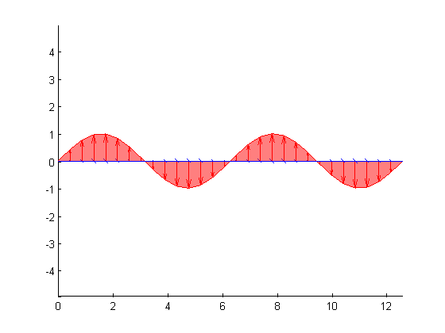

This is an example of how to create two overlapping waves in 3 dimension in MATLAB®.
Read about the quiver3 and fill3 functions in the MATLAB® documentation.
Go to MATLAB Plot Gallery
% Create some x data x = linspace(0, 4*pi, 30); % Create two waves to plot y1 = sin(x); y2 = sin(x-pi); % Plot the first wave in red and fill with color u = zeros(size(x)); figure; hold on; fill3(x, y1, u, 'r', 'EdgeColor', 'r', 'FaceAlpha', 0.5); % Add arrows for the first wave quiver3(x, u, u, u, y1, u, 0, 'r'); % Plot the first wave in blue and fill with color fill3(x, u, y2, 'b', 'EdgeColor', 'b', 'FaceAlpha', 0.5); % Add the arrows for the second wave quiver3(x, u, u, u, u, y2, 0, 'b'); % Use equal axis scaling axis equal;